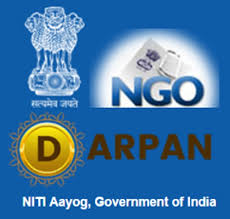
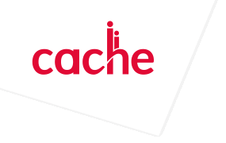
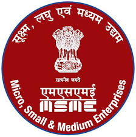
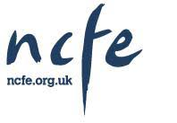
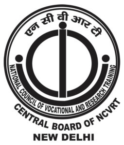
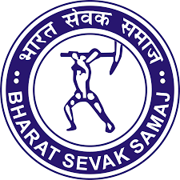
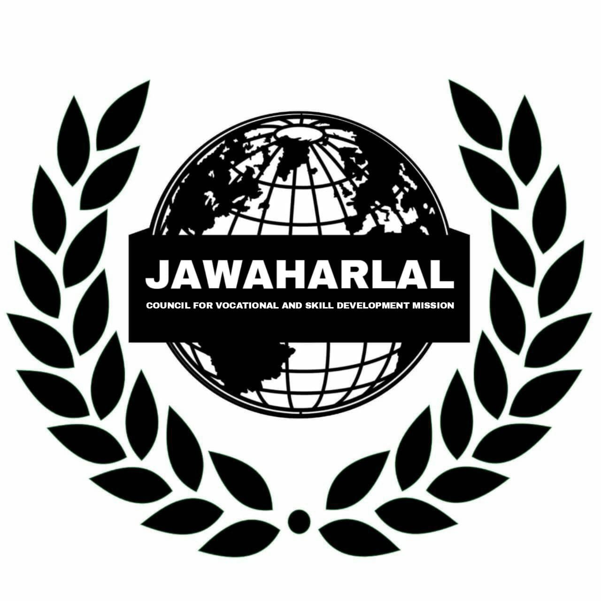
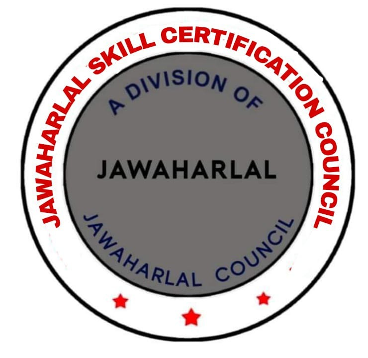
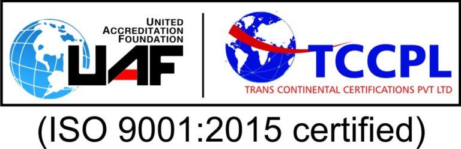

       

The NGO DARPAN was earlier maintained by erstwhile Planning Commission, which has been replaced by the NITI Aayog w.e.f. 1st January, 2015. The Portal, therefore, is being maintained at present under the aegis of NITI Aayog. NITI Aayog invites all Voluntary Organizations (VOs)/ Non-Governmental Organizations (NGOs) to Sign Up on the Portal.
VOs/NGOs play a major role in the development of the nation by supplementing the efforts of the Government. This portal enables VOs/NGOs to enrol centrally and thus facilitates creation of a repository of information about VOs/NGOs, Sector/State wise. The Portal facilitates VOs/NGOs to obtain a system generated Unique ID, as and when signed. The Unique ID is mandatory to apply for grants under various schemes of Ministries/Departments/Governments Bodies.
Apostille authenticate to simplify the legalization of documents to verify their authenticity, in order to be valid internationally, making unnecessary diplomatic or consular legalization or other Certifications. The educational qualifications are recognized by Apostille countries / External Affairs of India / External Affairs of Bahrain / foreign countries for verification, attestation and endorsement.
The Ministry of Micro, Small and Medium Enterprises (MSME), Government of India, is the apex body for the formulation and administration of rules, regulations and laws relating to micro, small and medium enterprises in India. Maria Montessori Teacher Training is recognized by Ministry of Micro, Small and Medium Enterprises (MSME), Government of India, under professional institution category to promote Education and Skill Training.
Bharat Sevak Samaj is the National Development Agency Promoted by the Planning Commission, Government of India to ensure public co-operation for implementing government plans. The main purpose behind the formulation of Bharath Sevak Samaj is to initiate a nationwide, non-official and non-political organizations with the object of enabling individual citizens to contribute, in the form of organized co-operative efforts, to the implementation of the National Development Plan. The constitution and functioning of Bharath Sevak Samaj is approved by the Indian Parliament.
A quality management system (QMS) is a formalized system that documents processes, procedures, and responsibilities for achieving quality policies and objectives. A QMS helps coordinate and direct an organization's activities to meet customer and regulatory requirements and improve its effectiveness and efficiency on a continuous basis. ISO 9001:2015, the international standard specifying requirements for quality management systems, is the most prominent approach to quality management systems. While some use the term QMS to describe the ISO 9001 standard or the group of documents detailing the QMS, it actually refers to the entirety of the system. The documents only serve to describe the system.
NCVRT is a CENTRAL BOARD established under article. 29 & 30(1) Constitution of India and Incorporated under the legislation of Ministry of Corporate Affairs, Government of India. NCVRT PG Diploma/ Advance Diploma/Diploma/Certificates are recognized/Accredited by all the member of International Quality Standards for Vocational Education Council (IQSVEC) as per the rule of National Vocational Education Qualification Framework (NVEQF) under Ministry of Human Resource Development, Government of India.
During the British period, Wood's Dispatch of 1854 contemplated pre vocational education. Indian Education Commission (1882), popularly known as Hunter commission also recommended the introduction of practical subjects in secondary schools Mahatma Gandhi, for the first time, insisted that manual and productive work should not only be an integral part of education but should center round it. The Education commission (1964-66) also recommended a 10-year schooling and diversification into two streams - academic and vocational at Senior Secondary Education.
Education is an end- less process needed for the development of any nation. India being one of the developing country concentrates on four aspects of youth education as maximum percent of youth are in our country and who are going to build this universe. The four central aspects of youth education are identified as Lifelong learning.
An amplified version of basic education which includes pre-school, elementary and secondary level education, Links between formal and non-formal education and Education for work.
The Government of India considers Vocational Education and Training (VET) as an important element of the nation's education initiative. In order for VET to play its part effectively in the changing national context and for India to enjoy the fruits of the demographic dividend, there is an urgent need to redefine the critical elements of imparting vocational education to make them flexible, contemporary, relevant, inclusive and creative. The Government is well aware of the important role of VET and has already taken a number of important initiatives. Through consultations with industry groups, academics, civil society and practitioners, Government of India has deliberated ways and means to strengthen these initiatives and recommends. Under this government law and order process, National Council of Vocational and Research Training in New Delhi promoting the extreme services to nation.